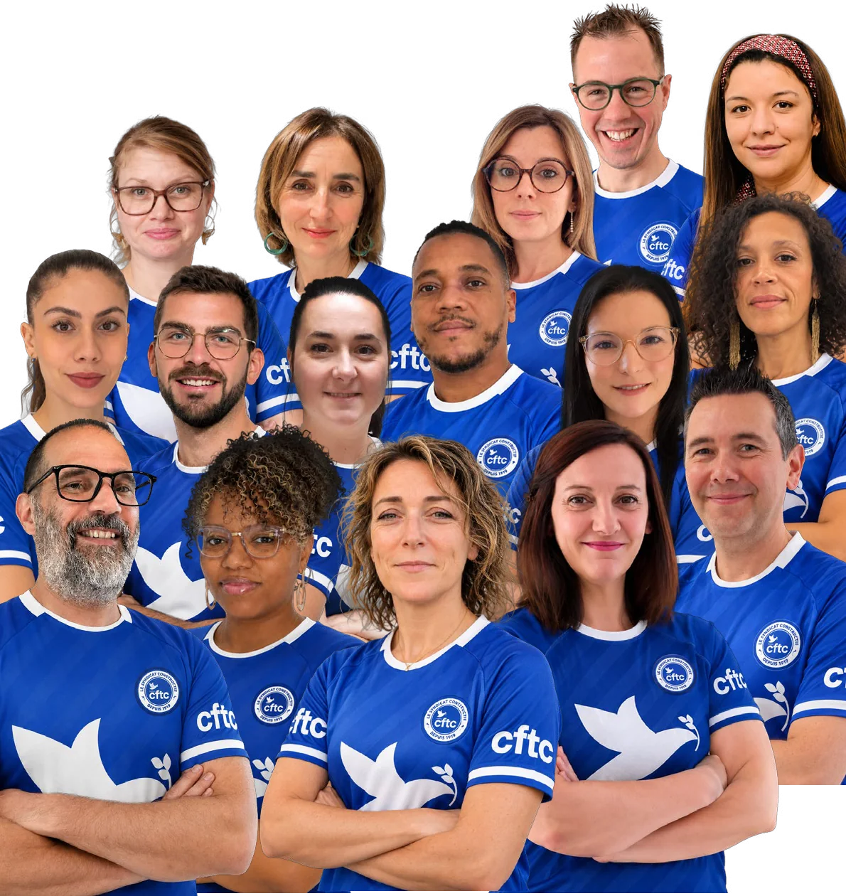
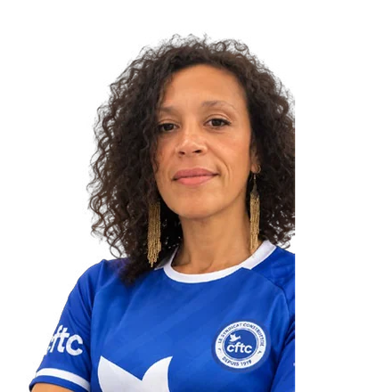

Protégé
votre pouvoir d'achat lors des négociations annuelles obligatoires (NAO)
Élection CSE 23 au 25 novembre 2026
« Allez les Bleus » !

Plus forts ensemble !
L'actualité de la campagne
Retrouvez tous les tracts de l'équipe CFTC, du plus récent au plus ancien.
Notre rôle
Le CSE représente les salariés auprès de l'employeur sur les conditions de travail, la santé, la sécurité, l'organisation et la politique sociale. Il gère les activités sociales et culturelles pour tous les salariés et leurs familles.
Notre ambition : préserver ce qui fonctionne (équilibre de vie, management de proximité, ambiance entre collègues) et répondre concrètement à vos attentes sur la reconnaissance, l'écoute, la rémunération, la charge de travail et les parcours professionnels, sans opposer ni les métiers, ni les sites, ni les équipes et les managers.
Vos élus CFTC agiront sur deux fronts :
Défendre vos conditions de travail auprès de la Direction
Gérer les Activités Sociales et Culturelles (ASC) de façon simple, transparente et équitable
Voter CFTC, c'est choisir des élus de terrain qui connaissent vos métiers. Jouons collectif : ensemble, nous serons plus forts demain !
Un mandat utile
Les résultats d'une approche constructive, pragmatique et responsable. Durant ce dernier mandat, vos représentants CFTC ont notamment :
votre pouvoir d'achat lors des négociations annuelles obligatoires (NAO)
les accords sur le temps de travail et le télétravail
de nouveaux accords Aidants et Congé naissance
avec les négociations sur le CET et le PERECO et l'ouverture d'une négociation sur la Gestion des Emplois et des Parcours Professionnels (GEPP), un chantier essentiel pour construire l'avenir et les compétences
la demande de mise en place de l'intéressement et de la participation ainsi que d'un forfait mobilité durable, aujourd'hui absents de notre entreprise
Notre engagement le plus constant reste humain : nous avons accompagné de nombreux collègues de tous statuts, adhérents ou non, lors d'entretiens RH ou de moments personnels difficiles. Pour nous, la solidarité n'est jamais une question de circonstance ou d'opportunité : c'est un devoir et un engagement de tous les instants.
Notre conviction est simple : notre force, c'est le collectif. Chacun, à son niveau, doit avoir les moyens de bien faire son travail, et c'est ensemble que nous sommes plus forts et construisons des solutions durables.
Nos engagements pour demain
Rémunération, conditions de travail, carrière, accompagnement au quotidien : des propositions concrètes, portées par des élus de terrain.
Votre investissement mérite une reconnaissance juste et concrète. Face à la hausse du coût de la vie, le pouvoir d'achat sera la priorité de notre mandat. Nous porterons ce sujet au cœur de la négociation avec l'employeur, sous toutes ses dimensions (salaires, avantages sociaux, prestations CSE) pour que chacun puisse vivre dignement de son engagement professionnel.
Comment ? Nos propositions pour améliorer votre rémunération
Votre bien-être professionnel n'est pas une option, un détail ou un luxe : c'est une condition essentielle de la qualité de votre travail. Une organisation qui prend soin de ses salariés donne le meilleur d'elle-même. Avec pragmatisme et détermination, nous portons des propositions concrètes pour que chacun travaille dans un environnement serein, équilibré et respectueux.
Comment ? Nos propositions pour améliorer vos conditions de travail
Chacun doit pouvoir envisager son avenir professionnel avec ambition et sérénité, sans se sentir figé dans son poste ou une trajectoire qui ne lui correspond plus. Nous défendrons des dispositifs concrets pour faciliter l'accès à la formation, valoriser les compétences, encourager la mobilité et garantir l'équité des évolutions, quels que soient le profil, le site ou la situation de chacun.
Comment ? Nos propositions pour accompagner votre carrière
Être élu(e) CSE, c'est être à votre écoute, dans les bons moments comme dans les plus difficiles. Fidèles aux valeurs de la CFTC, nous privilégions le dialogue avant de mobiliser les autres voies de recours. Nous serons vos interlocuteurs de terrain, pour que chaque salarié soit soutenu, informé de ses droits et jamais seul face à ses difficultés.
Comment ? Nos propositions pour être à vos côtés et vous épauler au quotidien
Notre campagne en images
Notre équipe et nos engagements, en quelques minutes.
Notre liste
Des collègues de Paris, Angoulême et régions, issus de métiers variés, réunis pour vous représenter, vous écouter et agir dans l'intérêt de tous.
Gestionnaire Prévoyance Vie – IFC
Conseiller Entreprises – Cotisations ADP TPE/PME
Chef de groupe – Cotisations Retraite
Conseiller Entreprises – Cotisations Retraite
Administrateur informatique – Production SI
Conseiller Entreprises – Cotisations ADP GC
Assistant technique et fonctionnel – Relations clients
Responsable de département – Risques op. et CI
Gestionnaire Prévoyance Vie – IFC
Key user – Prestations Prévoyance
Gestionnaire Prestations Santé
Gestionnaire Prestations Santé

Responsable de service – Action Sociale et Culturelle
Chargé d'études/projets – Relations clients
Ingénieur Sécurité – Production SI
Gestionnaire Prestations Prévoyance
Mode d'emploi du vote
Du 23 au 25 novembre 2026, chaque voix compte. Voici l'essentiel pour donner toute sa force à votre vote.
Le scrutin est ouvert du lundi 23 au mercredi 25 novembre 2026. Les modalités pratiques vous sont communiquées par l'entreprise.
Employés, Agents de maîtrise ou Cadres : vous votez pour les candidats CFTC de votre collège.
Les titulaires et les suppléants sont élus séparément : pensez à voter CFTC aux deux scrutins.
Votez pour la liste CFTC complète, sans raturer de nom : c'est ainsi que vous donnez toute sa force à l'équipe.
Notre liste a été construite comme une équipe : des collègues de différents métiers, sites et collèges, complémentaires les uns des autres. Raturer un nom peut modifier l'ordre des élus et affaiblir le collectif.
Une liste soutenue dans son ensemble, c'est une équipe soudée qui pèse face à la Direction pour défendre vos intérêts.
Du 23 au 25 novembre 2026
Voter CFTC, c'est choisir des élus de terrain qui connaissent vos métiers. Votez pour l'équipe CFTC dans son ensemble, sans raturer de nom : ensemble, nous serons plus forts demain !